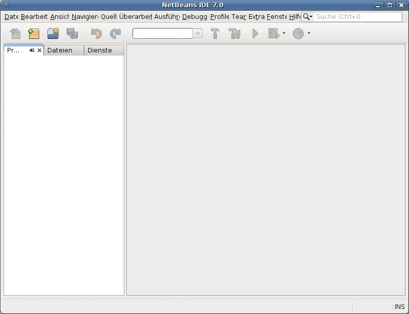
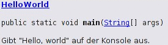
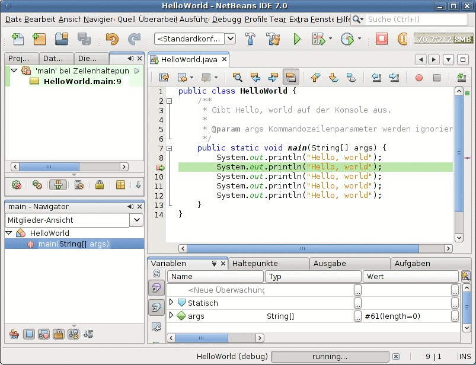
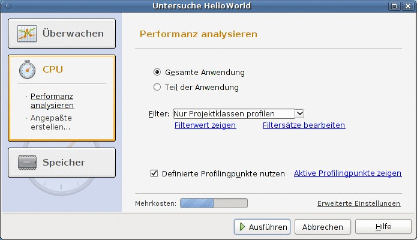
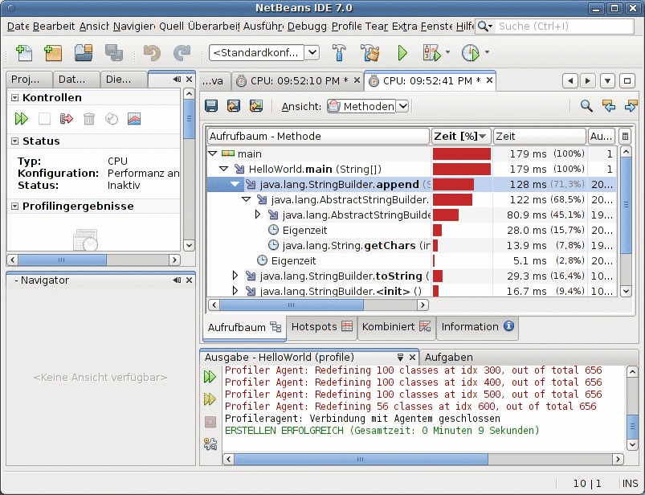

3.3 Netbeans IDE
3.3.1 Überblick
Netbeans ist eine freie IDE von Oracle, die ursprünglich aus
einem Studentenprojekt entstanden ist, aus dem sich im Laufe der Zeit
ein kleines Unternehmen entwickelte. Netbeans wurde zunächst
von Sun übernommen und unter dem Namen »Forté«
vermarktet und weiterentwickelt. Nach der Übernahme von SUN liegen
die Rechte heute bei Oracle. Netbeans unterliegt der CDDL (Common
Development and Distribution License) und der GPL v2 (GNU General
Public License).
Im Gegensatz zu Eclipse enthält Netbeans bereits in der Grundausstattung
einen GUI-Builder zur Entwicklung von grafischen
Oberflächen sowie einen Profiler, der auf Visual VM
basiert (der auch neueren JDKs beiliegt). Bezüglich des Leistungsumfangs
sind Netbeans IDE und Eclipse ähnlich mächtig. Beide IDEs
wurden in Java geschrieben, unterstützen diverse Programmiersprachen
und sind von der Architektur her vergleichbar. So bildet unter Netbeans
ebenfalls die sogenannte »Plattform« die Grundlage der IDE
und ähnlich wie bei Eclipse kann auch die Netbeans IDE durch
zahlreiche Plugins erweitert werden.
3.3.2 Installation
Sie können Netbeans von der Buch-DVD oder von der offiziellen
Projektseite unter http://netbeans.org/downloads
herunterladen. Zum Download wählen Sie die gewünschte Sprache
und das passende Betriebssystem aus und laden Sie das »Java SE«-Bundle
herunter. Beachten Sie, dass auch die Netbeans IDE ein vorinstalliertes
JDK benötigt. Hinweise zu dessen Installation finden Sie in Abschnitt 2.1.2.
Rufen Sie nach dem Download die heruntergeladene Datei auf, um den
Wizard für den Setup-Prozess zu starten. Nachdem Sie alle Installationsanweisungen
befolgt haben, finden Sie ein Icon auf Ihrem Desktop, mit dessen Hilfe
Sie die Netbeans IDE starten können.

Abbildung 3.5: Die Netbeans IDE nach dem ersten Öffnen
Schließen Sie zunächst den Willkommensbildschirm und legen
Sie ein Verzeichnis an, unter dem Netbeans Ihre Projekte verwalten
soll, z.B. c:\Projekte.
3.3.3 Erste Schritte
Wie schon im vorigen Abschnitt wollen wir uns mit Hilfe eines einfachen
HelloWorld-Programms mit den
Möglichkeiten und der Bedienung der IDE vertraut machen. Im Vergleich
zu Eclipse gibt es unter Netbeans kein Perspektiven-Konzept. Anfangs
ist der Bildschirm zunächst in zwei feste Bereiche unterteilt.
Um ein neues Java-Projekt anzulegen, klicken Sie mit der rechten Maustaste
in die Projektansicht. Nun öffnet sich das Kontextmenü,
aus dem der erste Menüpunkt »Neues Projekt...« ausgewählt
wird. Wählen Sie anschließend die Kategorie »Java«
und den Projekttyp »Javaanwendung« und klicken Sie dann
auf »Weiter«. Geben Sie dem Projekt den Namen »HelloWorld«,
wählen Sie als Ablageort das zuvor angelegte Workspace-Verzeichnis
c:\Projekte und unter »Hauptklasse
erzeugen« tragen Sie »HelloWorld« ein. Wenn Sie den
Dialog beenden, legt Netbeans ein Projekt und eine Klasse HelloWorld
an:
001 /*
002 * To change this template, choose Tools | Templates
003 * and open the template in the editor.
004 */
005
006 /**
007 *
008 * @author hhansen
009 */
010 public class HelloWorld {
011
012 /**
013 * @param args the command line arguments
014 */
015 public static void main(String[] args) {
016 // TODO code application logic here
017 }
018 }
|
Listing 3.9: HelloWorld nach der Erzeugung durch den Netbeans-Wizard
Wir wollen nun die main-Methode
erweitern, indem wir den Cursor in Zeile 016
positionieren und dort [UMSCHALT]+[ENTF]
drücken. Damit löschen wir die aktuelle Zeile, also den
für uns unbedeutenden Kommentar, um ihn anschließend mit
System.err.println("Hello, world!");
zu überschreiben.
Einfacher geht es auch hier, wenn man die Codevervollständigung
zu Hilfe nimmt. Schreiben Sie einfach sout,
drücken Sie die [TAB]-Taste
und der Editor ersetzt dieses Kürzel durch System.out.println("");.
Speichern Sie nun die erzeugte Datei, indem Sie [STRG]+[S]
drücken. Auch unter Netbeans brauchen Java-Klassen nicht explizit
kompiliert zu werden, denn sobald eine Klasse nach einer Änderung
gespeichert wird, kompiliert Netbeans diese und alle abhängigen
Klassen automatisch neu.
001 public class HelloWorld {
002 /**
003 * @param args the command line arguments
004 */
005 public static void main(String[] args) {
006 System.out.println("Hello, world");
007 }
008 }
|
Listing 3.10: HelloWorld nach Vervollständigung der main-Methode
Um das Programm auszuführen, wählen Sie den Menüpunkt
»Ausführen«, gefolgt von »Hauptprojekt ausführen«
oder drücken Sie in der Toolbar auf den Button »Hauptprojekt
ausführen«. Sie können auch einfach [F6]
drücken. Im unteren Bereich der IDE öffnet sich die Ausgabekonsole:
run:
Hello, world
ERSTELLEN ERFOLGREICH (Gesamtzeit: 0 Minuten 0 Sekunden)
Nun wollen wir die main-Methode
dokumentieren:
001 public class HelloWorld {
002 /**
003 * Gibt "Hello, world" auf der Konsole aus.
004 *
005 * @param args Kommandozeilenparameter werden ignoriert
006 */
007 public static void main(String[] args) {
008 System.out.println("Hello, world");
009 }
010 }
|
Listing 3.11: HelloWorld mit Javadoc-Kommentar
Anders als Eclipse zeigt Netbeans die Dokumentation nicht als Tooltip
an. Stattdessen kann man mit »Fenster«, »Anderes«,
»Javadoc« im unteren Bereich der IDE ein Fenster öffnen,
in dem die jeweils zugehörige Javadoc-Dokumentation angezeigt
wird. Um den Javadoc-Kommentar zu sehen, muss man mit der Maus auf
die main-Methode
klicken oder den Textcursor auf den Methodennamen stellen. Dies funktioniert
ebenso wie unter Eclipse für alle Klassen, Methoden etc., deren
Quellcode bekannt ist.

Abbildung 3.6: Javadoc-Fenster unter Netbeans
Vervielfachen Sie nun die Ausgabeanweisungen in obigem Programm, indem
Sie den Cursor in Zeile 8 setzen und [STRG]+[UMSCHALT]+[CURSORRUNTER]
drücken, um die aktuelle Zeile zu kopieren. Weitere Kopien lassen
sich erzeugen, indem Sie [STRG]+[UMSCHALT]
festhalten und mehrfach [CURSORRUNTER]
drücken.
001 public class HelloWorld {
002 /**
003 * Gibt Hello, world auf der Konsole aus.
004 *
005 * @param args Kommandozeilenparameter werden ignoriert
006 */
007 public static void main(String[] args) {
008 System.out.println("Hello, world");
009 System.out.println("Hello, world");
010 System.out.println("Hello, world");
011 System.out.println("Hello, world");
012 System.out.println("Hello, world");
013 }
014 }
|
Listing 3.12: HelloWorld mit kopierten Zeilen
Auch Netbeans besitzt einen integrierten Debugger.
Um einen Breakpoint in Zeile 009
zu setzen, klicken Sie am linken Rand des Editors auf die Zeilennummer
oder drücken Sie in der gewünschten Zeile [STRG]+[F8].
Eine Zeile mit einem Breakpoint wird durch ein rotes Rechteck markiert.
Starten Sie nun das HelloWorld-Programm
im Debugger, indem Sie im Menü »Debuggen«, »Hauptprojekt
debuggen« auswählen oder indem Sie einfach [STRG]+[F5]
drücken. Das Programm läuft bis zum Breakpoint und bleibt
dann stehen.

Abbildung 3.7: Netbeans-Debugger
Im Fenster links oben erkennt man den unterbrochenen Thread, der in
diesem Fall in Zeile 009
steht; im Editor ist die Zeile grün hervorgehoben. Mit [F8]
kann man die jeweils nächste Zeile ausführen, mit [F5]
lässt man das Programm bis zum Ende weiterlaufen.
Neben dem Debugger besitzt Netbeans auch einen integrierten Profiler.
Mit einem Profiler kann man den Speicherverbrauch
der Anwendung analysieren, nach Speicherlöchern suchen oder zu
langsamen Code aufspüren. Für eine kleine Beispielsitzung
mit dem Profiler wollen wir das folgende Programm verwenden:
001 public class HelloWorld {
002 /**
003 * Erzeugt einen langen String.
004 *
005 * @param args Kommandozeilenparameter werden ignoriert
006 */
007 public static void main(String[] args) {
008 String s = "";
009 for (int i = 0; i < 1000; i++)
010 s += "Hello, world";
011 }
012 }
|
Listing 3.13: Programm für die Profiler-Sitzung
Das Programm verkettet den String »Hello, world« in einer
Schleife tausend Mal hintereinander mit sich selbst zu einer langen
Zeichenkette. Technisch gesehen verbirgt sich dahinter ein iteratives
Kopieren von Zeichen in ein immer größeres Array, das in
einer solch langen Schleife relativ viel Speicher verbraucht und eher
schlechte Performance-Eigenschaften hat.
Sie können die Profiler-Sitzung starten, indem Sie im Menü
»Profiler«, »Hauptprojekt profilen« auswählen.

Abbildung 3.8: Einstellungen zur Profiling-Sitzung
Wählen Sie in diesem Dialog unter »Filter« die Option
»Alle Klassen profilen«, denn das Kopieren des Arrays findet
in den Standardklassen des JDK statt, nicht in der Hauptklasse unseres
Programms. Beginnen Sie die Profiling-Sitzung, indem Sie auf »Ausführen«
klicken:

Abbildung 3.9: Ergebnis der Profiling-Sitzung
Man kann erkennen, dass die Anwendung (also die main-Methode)
insgesamt 179 Millisekunden lief, was recht viel für so ein einfaches
Programm ist. Wir sehen auch, dass die Methode StringBuilder.append
einen Anteil von mehr als 70 Prozent an der Gesamtlaufzeit hat, und
bekommen so einen ersten Hinweis auf mögliche Optimierungsansätze.
Für eine kleine Einführung in den Profiler von NetBeans
sollen diese Ausführungen zunächst ausreichen; weitere Informationen
zum Profiling von Java-Programmen finden sich in Kapitel 52.